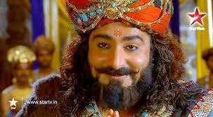

The Mahabharata is one of the two major Sanskrit epics of ancient India, the other being the Ramayana. It narrates the struggle between two groups of cousins in the Kurukshetra War and the fates of the Kaurava and the Pandava princes and their successors. It also contains philosophical and devotional material, such as a discussion of the four "goals of life" or purusartha. Among the principal works and stories in the Mahabharata are the Bhagavad Gita, the story of Damayanti, an abbreviated version of the Ramayana, and the story of Rsyasringa, often considered as works in their own right.
| S.no | Name | Image | Link Address | Description |
|---|---|---|---|---|
| 1 | Shri Krishna | shri Krishna | Vasudev and Devaki's son; Nanda and Yashoda's foster son; Kunti's nephew and Karna and Pandavas's cousin. | |
| 2 | Bhishma | Bhishma | King Shantanu and Goddess Ganga's son and Grandsire of Pandavas and Kauravas. | |
| 3 | Dronacharya | Dronacharya | Dronacharya was the 3rd incarnation of Brahma and was royal preceptor to the Kauravas and Pandavas; an avatar of Brihaspati. | |
| 4 | Draupadi | Draupadi | King Dhrupad's daughter, Shikhandini and Dhristadyumn's younger sister, Princess of Panchala, Pandavas's common wife and Prativindhya, Sutasoma, Srutakarma, Satanika and Srutasena's mother. | |
| 5 | Yudhishthir | Yudhishthir | First Pandava, Pandu and Kunti's son, Draupadi's husband, Prativindhya's father and King of Indraprastha and later Hastinapur. | |
| 6 | Bhim | Bhim | Second Pandava; Vayu and Kunti's son; Hidimba and Draupadi's husband and Ghatothkacha, Sutasoma's father. | |
| 7 | Arjuna | Arjuna |
Third Pandava prince, Indra and Kunti's son; Draupadi and Subhadra's husband; Abhimanyu and Srutakarma's father. |
|
| 8 | Nakul | Nakul | Fourth Pandava, Madri and Ashwini Kumar's son, Draupadi's husband and Satanika's father. | |
| 9 | Sahadeva | Sahadeva | Fifth Pandava, Madri and Ashwini Kumar's son, Draupadi's husband and Srutasena's father. | |
| 10 | Dhritrastra | Dhritarashtra | Vyasa and Ambika's son, Gandhari's husband, Kauravas and Dushyala's father, Pandavas's paternal uncle and King of Hastinapur. | |
| 11 | Duryodhan | Duryodhan | Eldest Kaurava, King Dhritarashtra and Queen Gandhari's son, Shakuni's nephew, Bhanumati's husband and Karna and Ashwatthama's friend, Crown prince of Hastinapur | |
| 12 | Sakuni |  | Sakuni | King Subala and Queen Sudharma's son, Gandhari's elder brother and Kauravas's maternal uncle. |
| 13 | karna | karna | Surya and Kunti's son; Pandavas's elder brother; Adhiratha and Radha's foster son; Duryodhana's friend; Vrushali's husband and King of Anga. |